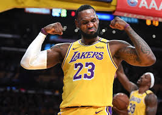
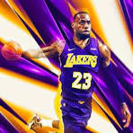
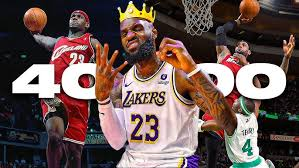

Only player in NBA history to record at least 30,000 points, 10,000 rebounds, and 10,000 assists,Click on the stats photo for a wiki of his stats.
| My Goat, Lebron James, is the great basketball player of all time üêê
Where do I even begin? LeBron, my admiration for you has been unwavering since the moment I first saw you play. Your ability to drive into the paint and strike fear into your opponents is extraordinary. The smoothness of your moves around the rim and the precision of your jumpshot are a testament to your skill. I would do anything for you.If only time could be frozen, so I wouldn't have to witness the day you retire. You faced adversity in your youth, yet you never lost hope. Off the court, you are equally remarkable‚Äîa devoted husband and father. At times, I even find myself thinking of you as a father figure. The thought of your eventual retirement fills me with dread and sorrow. I would sacrifice anything to see you smile.Over the years, you have brought me immense joy and, at times, heartbreak. When you first left Cleveland, it felt as if my heart shattered. Yet, when you won your first championship in Miami, I couldn't help but shed a tear, knowing you truly deserved it. All I wanted was for you to return home, and when you finally did, I rejoiced.The year 2015 was challenging, but in 2016, you made history. Coming back from a 3-1 deficit was unbelievable. I was overwhelmed with emotion, especially when you declared, "Cleveland, this is for you!" You have not only changed the game of basketball forever but also profoundly impacted my life.Now, as you continue to age gracefully, still the greatest of all time, my admiration remains steadfast. I love and respect you, LeBron James, my champion, my king.üòäü´∂üèæ‚ù§Ô∏è |
|

Lebron James inspired me to want to play basketball and be just like him while I was a kid but they when I got older I knew that wasnt going to be possible with my height but I stuck to it and played even tho I couldnt have the same playstyle but his mentality stuck with me and I wanted to be the best I could at what I did on the court and that just made me hustle on defense and never give up on a play and try my hardest. |
|

You can just feel the aura from this picture alone. |
|

As you can see if you click on the image above you will see 10 minutes straight of My Glorious King doing lengendary unbelievable things. |
|
Only player in NBA history to record at least 30,000 points, 10,000 rebounds, and 10,000 assists,Click on the stats photo for a wiki of his stats. |
| Achievements | |
|---|---|
| Lebon James High School Awards | High School Awards |
| Lebon James Olympic Awards&Stats | Olympic Awards |
| Lebron James Awards | Lebron James All-Time Awards |